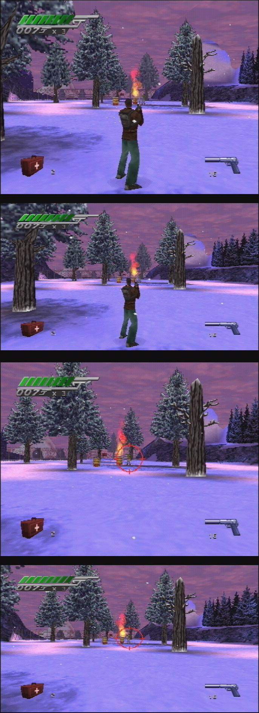
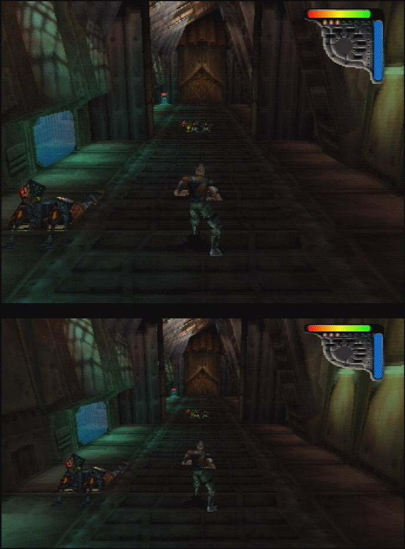
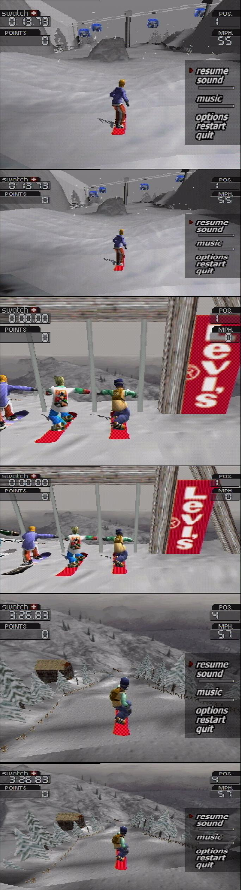
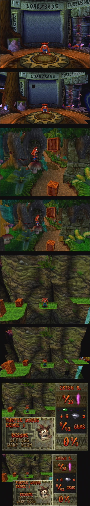
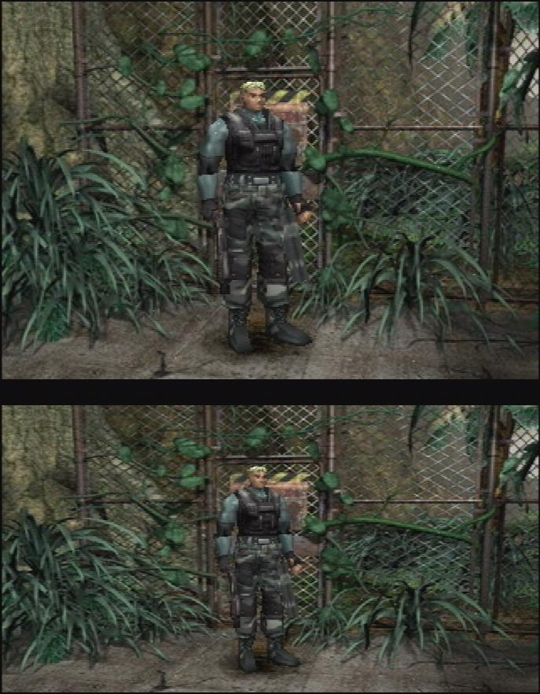

Widescreen
Recovered from the ShaolinAssassin wiki · snapshot 20240906004514
$WIDESCREEN
POPStarter features a GTE widescreen hack that forces 16:9 for games that doesn’t have widescreen support. To
enable 16:9 for your game, you need to use the $WIDESCREEN command in a CHEATS.TXT file.
-
$WIDESCREEN command enables 16:9 for your game.
-
$ULTRE_WIDESCREEN command gives you a wider FOV than the standard 16:9 aspect ratio. It does not match any aspect ratio standard.
-
$EYEFINITY command gives you a 3×16:9 aspect ratio (3 monitors).
These 3 commands does not deal with stuff like HUDs, texts/fonts, menus, 2D backgrounds…
Unfortunately, GTE hack is not finished and does not expand the rendering area for now and may cause visible glitches like invisible textures, clipping, flying sprites (Crash Bandicoot 2), wire distortion…
As you can see in the picture below, it is not as good as the PS1 widescreen cheats from the hackers @PCSX2 forums.
$WIDESCREEN – screenshots
007 : Tomorrow Never Dies :
Apocalypse :
Cool Boarders 3 :
Crash Bandicoot 2 :
Die Hard Trilogy 2 :
Dino Crisis 2 :
Exhumed :
Ghost in the Shell :
Gran Turismo :
Medievil :
Metal Gear Solid :
Soul Reaver :
Syphon Filter :
Team Buddies :
Tomb Raider II :
Wipeout 3 :
Images & screenshots




